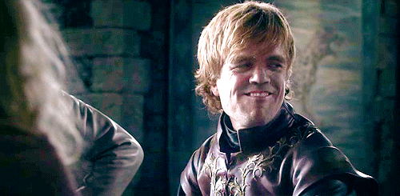
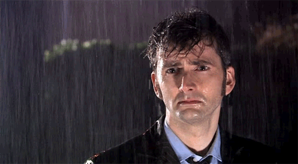
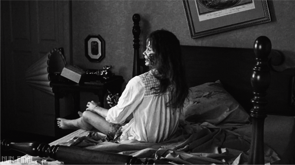

Quand on met en ligne un wordpress

Quand on réussit la mise en ligne d'un wordpress

Quand on me demande de mettre en ligne un Wordpress

Quand Virgine s'y met

Parfois, il vaut mieux faire une pause
Et puis, pendant la pause, essayez de vous détendre